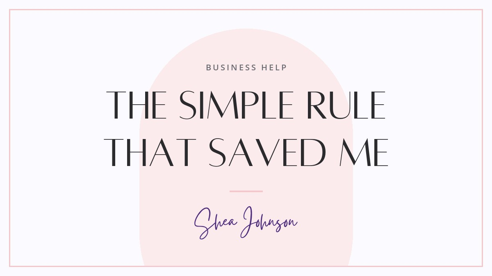

I have this very simple rule that I follow whenever I’m feeling low and it seems like I can’t get my work done.
Or anything done for that matter.
I call it the “One Thing a Day” rule.
I use this rule to help me make progress when I’m failing to get as much done as I’d like.
Or maybe my schedule filled up suddenly.
Or a last-minute emergency happened.
Whatever the case may be…
I resort to the One Thing a Day rule.
I came up with this rule when I got my first apartment in Quincy back in 2018.
I remember waking up scared.
I was alone now — after growing up in the house with family all of my life.
And I had more responsibility now — the bills that came with my new home.
I remember sitting up in my bed that morning wondering how I was going to keep this new roof over my head.
I had been unorganized and without structure and discipline for so long.
And my mental health was at the center of it all.
I remember realizing that even though stability was part of my treatment plan with my Behavioral Health providers…
That was only going to help a little bit.
I would still have to do the rest of the work.
At times, my depression and my anxiety would win the battle — no matter how hard I fought to win the war.
I remember on one of those days, I gave myself permission to be kind, to be gentle, and to be patient with myself.
Just as Tamicka had taught me.
(Tamicka was my previous care coordinator, who I miss very much since her retirement.)
And out of that, I developed the One Thing a Day rule.
If I completed one thing a day, I would have seven things done at the end of the week.
Instead of none.
Nowadays, on most days, I’m getting more done than just one thing.
And this is all from re-parenting, unlearning and relearning, reading, taking classes, researching, getting on Google — etc., etc., etc.
Finding my way, no matter what it took.
But I want to be honest with you.
I still have days where the mood is low and I need to take a break.
Or I’ve been too ambitious and I need to catch myself.
I resort to the One Thing a Day rule.
And I encourage you to do the same.
Be kind to yourself.
Be gentle.
Be patient.
This is one of my most powerful rules.
Because instead of having zero things done at the end of the week, you’ll have seven.
And it’s okay if it’s not seven.
If it turns out to be six or five or four or three even…
The point is you made progress.
And you’ll be so proud of yourself when you have something to look back on at the end.
Be kind to yourself.
One thing a day.
That’s enough.